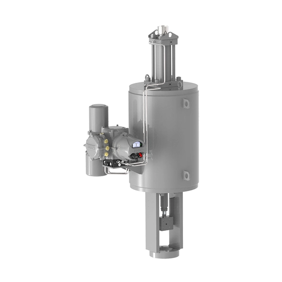

Skilmatic SI là dòng actuator điện-thủy lực tự chứa (self-contained electro-hydraulic) của Rotork, thiết kế cho ứng dụng fail-safe nơi an toàn chức năng (functional safety) là yêu cầu bắt buộc. Actuator kết hợp vận hành bằng điện với độ chính xác thủy lực và độ tin cậy của cơ cấu spring-return hoặc accumulator. Bài viết giải thích các chế độ fail-safe, ESD, PST và tiêu chí lựa chọn ở mức ứng dụng, không tuyên bố mức SIL cụ thể cho một cấu hình khi chưa có certificate xác nhận.

Trả lời nhanh
- Skilmatic SI gồm SI3 (torque 75–36.000 Nm) và SI4 (torque 2.000–200.000 Nm) cho quarter-turn, cùng bản linear (thrust tới 400 kN).
- Fail-safe bằng spring-return (SI3/SI4) hoặc accumulator (SI4), có 3 chế độ: mất tín hiệu ESD hoặc nguồn, chỉ mất ESD, chỉ mất nguồn; có tùy chọn stayput.
- Chứng nhận IEC 61508-2:2010, Systematic Capability SC-3, phù hợp hệ thống SIL 2 (không chẩn đoán) và SIL 3 (có chẩn đoán) — cần certificate riêng cho từng cấu hình.
- Có Partial Stroke Test (PST) và Full Stroke Test (FST), cấu hình qua Rotork Bluetooth Setting Tool Pro.
- Chống nước: control module IP66/68 (7 m/72 giờ); cụm hoàn chỉnh SI3 tới IP66/67, SI4 tới IP65. Vùng nguy hiểm: Ex d IIB/IIC T4 (ATEX/IECEx/cCSAus/CCC/PESO/JPEx/UKEX).
Skilmatic SI là gì
SI range gồm actuator quarter-turn (SI3, SI4) dùng cho van bi, van bướm, van plug và damper, cùng bản linear cho ứng dụng cần chuyển động thẳng. Actuator chỉ cần nguồn điện (1-pha, 3-pha hoặc 24 VDC) để vận hành, dùng hệ thủy lực nội bộ để tạo torque/thrust và spring-return hoặc accumulator để tạo hành động fail-safe khi mất tín hiệu hoặc nguồn.
Bảng torque/thời gian vận hành
| Model | Torque (Nm) | Thời gian hướng thủy lực (giây) | Thời gian hướng spring (giây) |
|---|---|---|---|
| SI3 | 75–36.000 | 1,7–420 | 0,1–527 |
| SI4 | 2.000–200.000 | 5–400 | 0,1–500 |
Bản linear SI có thrust tới 400 kN (90.000 lbf); thời gian vận hành và thrust chi tiết theo model cần liên hệ trực tiếp Rotork.
Các chế độ fail-safe và ESD
| Chế độ | Điều kiện kích hoạt | Đặc điểm |
|---|---|---|
| Fail-safe khi mất tín hiệu ESD hoặc mất nguồn | Mất nguồn được coi là một phần của SIS | Công suất tiêu thụ thấp trên ESD input (0,2 W); nhận tín hiệu ESD 20-60 VDC hoặc 60-120 VAC |
| Fail-safe chỉ khi mất tín hiệu ESD | Nguồn điện không được coi là quan trọng cho SIS | Van solenoid an toàn cấp nguồn từ tín hiệu ESD (24 VDC), dùng PWM để giảm tiêu thụ điện |
| Fail-safe chỉ khi mất nguồn | Không có yêu cầu tín hiệu ESD trong SIS | Không cần tín hiệu ESD riêng |
| Stayput khi mất nguồn | Ứng dụng không yêu cầu fail-safe | Actuator giữ nguyên vị trí khi mất nguồn |
Có tùy chọn ESD input thứ hai (qua option card) để actuator nhận đồng thời tín hiệu ESD từ hệ thống an toàn và Process Shutdown (PSD) từ DCS mà không ảnh hưởng tính toàn vẹn của hệ an toàn.
Tiêu chí chọn cấu hình Skilmatic SI
- Torque/thrust yêu cầu: đối chiếu với dải torque SI3 (75–36.000 Nm) hoặc SI4 (2.000–200.000 Nm), hoặc thrust linear (tới 400 kN, liên hệ Rotork để xác nhận theo model).
- Yêu cầu fail-safe của SIS: chọn chế độ ESD/mất nguồn/stayput phù hợp với phân tích an toàn của dự án (xem bảng trên).
- Mức SIL yêu cầu: xác nhận SIL 2 hay SIL 3 với certificate PFD/SFF cụ thể từ Rotork cho đúng cấu hình, không suy đoán mức SIL chung cho cả range.
- PST/FST: nếu van an toàn ít vận hành, cấu hình PST để kiểm tra định kỳ mà không cần đóng hoàn toàn van.
- Môi trường và khu vực nguy hiểm: xác nhận cấp bảo vệ IP và chứng nhận Ex phù hợp khu vực lắp đặt thực tế (ATEX/IECEx/cCSAus/CCC/PESO/JPEx/UKEX).
- Tích hợp mạng: xác nhận giao thức cần dùng trong số Pakscan, Profibus, Foundation Fieldbus, Modbus, DeviceNet, HART.
Model và range liên quan
| Model/range | Lý do liên quan | Trang sản phẩm |
|---|---|---|
| SI3/SI4 (linear và part-turn) | Các nhóm chính trong Skilmatic SI | Skilmatic SI Rotork |
| Remote Hand Station (RHS) | Vận hành/cấu hình từ xa tới 100 m cho vị trí khó tiếp cận | Skilmatic SI Rotork |
| Modular Electro-Hydraulic | Lựa chọn kiến trúc modular nếu ứng dụng tải lớn cần cấu hình khác self-contained | Modular Electro-Hydraulic Rotork |
Mua Skilmatic SI chính hãng tại Việt Nam
Fast Group Engineering là đơn vị cung cấp sản phẩm Rotork chính hãng tại Việt Nam, đầy đủ giấy tờ CO/CQ, catalogue và datasheet theo từng lô hàng. Đội ngũ kỹ thuật hỗ trợ đối chiếu cấu hình SI3/SI4 theo torque, chế độ fail-safe, mức SIL yêu cầu và chứng nhận khu vực trước khi báo giá.
Câu hỏi thường gặp
Skilmatic SI hoạt động fail-safe như thế nào?
Skilmatic SI dùng spring-return hoặc accumulator (SI4) để đưa van về vị trí an toàn khi mất tín hiệu ESD và/hoặc mất nguồn điện. Actuator có thể cấu hình fail-safe theo 3 kiểu: mất tín hiệu ESD hoặc nguồn, chỉ mất tín hiệu ESD, hoặc chỉ mất nguồn điện — tùy theo yêu cầu SIS của hệ thống.
Partial Stroke Test (PST) trên Skilmatic SI là gì?
PST là chức năng kiểm tra actuator và van an toàn di chuyển một phần hành trình (0-99%, cấu hình được) mà không cần đóng hoàn toàn van, giúp phát hiện lỗi tiềm ẩn mà không ngắt quá trình vận hành. Kết quả PST được ghi vào data logger cùng áp suất nội bộ đo được.
Skilmatic SI đạt chứng nhận SIL nào?
Theo tài liệu brochure hiện hành, SI được chứng nhận IEC 61508-2:2010 cho SIS với Systematic Capability SC-3, phù hợp hệ thống SIL 2 (không cần chẩn đoán) và SIL 3 (có chẩn đoán). Mức SIL áp dụng cho cấu hình cụ thể của dự án cần xác nhận qua certificate với PFD/SFF do Rotork cung cấp, không suy đoán chung cho mọi cấu hình.
SI3 và SI4 khác nhau ở cấp bảo vệ nước không?
Có sự khác biệt: theo brochure hiện hành, cụm actuator hoàn chỉnh SI3 đạt watertight tới IP66/IP67, trong khi SI4 đạt tới IP65. Cả hai đều dùng control module đạt IP66/68 (7 m/72 giờ).
Cần gửi thông tin gì để chọn đúng cấu hình Skilmatic SI?
Gửi torque/thrust yêu cầu, loại fail-safe cần (ESD/mất nguồn/stayput), có cần PST hay không, chứng nhận khu vực nguy hiểm, giao thức mạng điều khiển và mức SIL yêu cầu của hệ thống cho Fast Group Engineering để đối chiếu trước khi báo giá.
Gửi dữ liệu SIS để chọn đúng cấu hình Skilmatic SI
Để kiểm tra đúng mã, vui lòng gửi torque/thrust yêu cầu, yêu cầu fail-safe/SIL, chứng nhận khu vực và giao thức điều khiển cho Fast Group Engineering qua Zalo/điện thoại (+84) 938 888 958 hoặc email minhduc@fastgroup.vn.
Nguồn tham khảo
- PUB021-064, Skilmatic SI range Brochure — trang 4 (giới thiệu, chế độ fail-safe), trang 6 (bảng torque SI3/SI4, thrust linear), trang 8 (chế độ ESD), trang 9 (PST), trang 12 (Remote Hand Station), trang 13 (chứng nhận, watertight rating SI3/SI4).
Ghi chú nội bộ: bài không nêu mức SIL cụ thể cho một cấu hình nào — theo brochure, certificate PFD/SFF cần lấy riêng theo từng cấu hình từ Rotork. Bài cũng chưa đối chiếu PUB021-062 (Skilmatic SI range Product datasheet đầy đủ, đã có một phần trong thư viện, còn 24 trang chưa đọc) để lấy chi tiết hazardous area certification theo từng quốc gia — reviewer nên bổ sung nếu khách hàng cần chứng nhận cụ thể ngoài EU/US/UK.